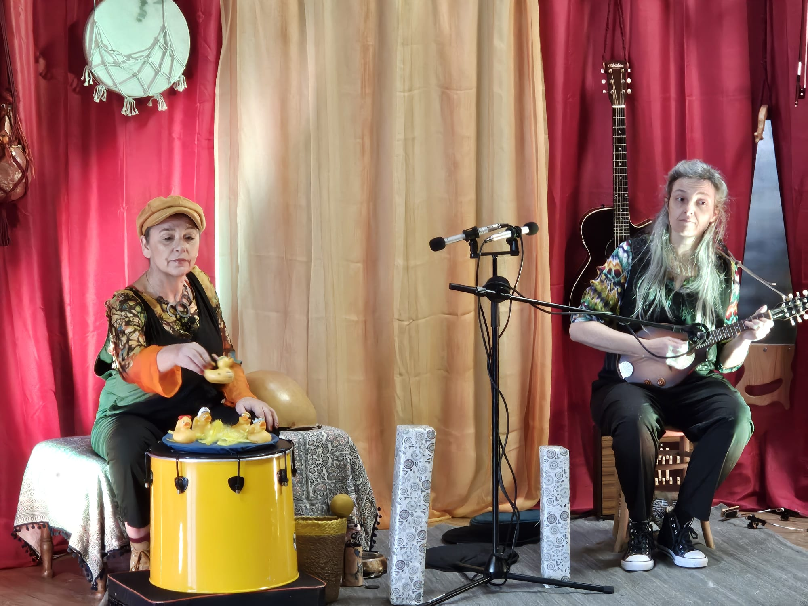

Plumes de Sons
Doux voyage musical pour petites oreilles
Entre chansons originales, comptines revisitées et moments de rire, le duo invite les enfants à découvrir la musique comme un jeu, une émotion et une aventure. Avec leurs voix complices et leurs instruments colorés, elles tissent un univers tendre et poétique où chaque note est une plume qui chatouille l’imaginaire.

Nath & thalie
Derrière Les Plumes de Sons se trouvent Nathalie Chameau et Nathalie Chaplin,
deux musiciennes passionnées. Elles interviennent depuis de nombreuses années en milieu scolaire
et dans le domaine de la petite enfance (0-3 ans). Chacune a un parcours en musiques actuelles
:
Jazz, Rock, Traditionelle...
Nathalie Chameau a fait de la voix sa spécialité.
Chanteuse malentendante, elle apporte
également sa pratique de la langue des signes à la création des spectacles.
Nathalie
Chaplin s'accompagne à la guitare, la mandoline, diverses percussions et autres instruments
plus insolites comme la scie musicale, la shruti box, la washboard...
À propos de nous
Ensemble Nath & Thalie crééent et interprètent des spectacles musicaux avec des chansons originales,
differents instruments et objets détournés. Leurs histoires contées sont accompagnées de la langue
des Signes
grâce à Nathalie Chameau.
À travers la chanson, le jeu et les sons, elles éveillent la curiosité et l’imaginaire
des enfants.

Offrir aux tout-petits une première rencontre avec la musique, source de découverte, d’émotion et de partage.
2
spectacles
4
années d'experience
Nos représentations musicales
Spectacles musicaux et sensoriels imaginés et créés de toutes pièces par Les Plumes de Sons.
Actualité
C'est la saison de la création ; après nos dernières représentations auprès de notre tout jeune public,
les plumes de se remontent les manches pour gratter du papier. Au programme, une toute nouvelle histoire.
Bercée par le vent, une graine globetrotteuse nous emmènera aux quatre coins du monde avant de devenir une magnifique fleur.
On retrouvera les éléments de la nature, mêlés de chants du monde, de timbres d'instruments de musique de pays lointains et de rythmes envoûtants.
Un voyage entre musique et nature pour bercer petites et grandes oreilles